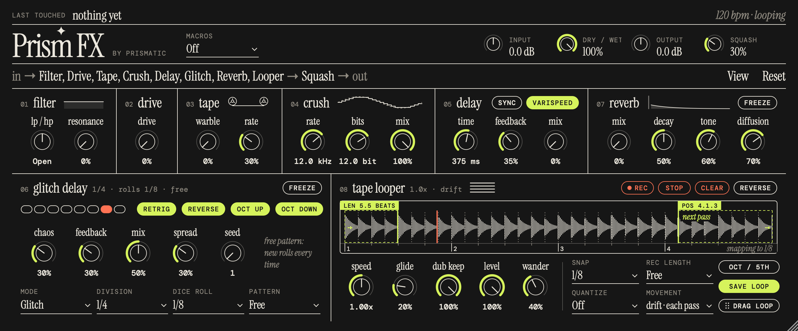
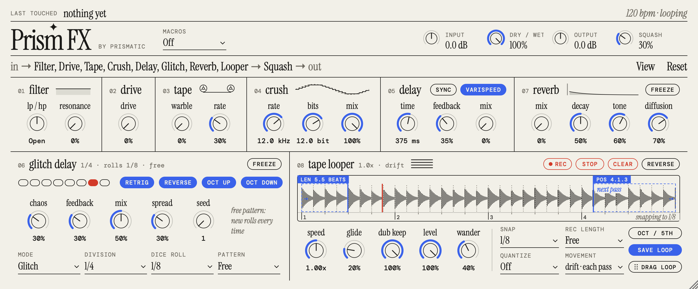

A free effect and tape looper for Ableton, Logic and other DAWs, built from the CHOMPI effects.


Unzip the download. Copy Prism FX.component to ~/Library/Audio/Plug-Ins/Components and Prism FX.vst3 to ~/Library/Audio/Plug-Ins/VST3.
Prism FX isn't notarized by Apple yet, so macOS will say it "could not verify" it. Click Done, then run this in Terminal to allow it:
xattr -dr com.apple.quarantine ~/Library/Audio/Plug-Ins/Components/"Prism FX.component" ~/Library/Audio/Plug-Ins/VST3/"Prism FX.vst3"
Restart your DAW. Prism FX is listed under Prismatic.
One knob: low-pass one way, high-pass the other, with resonance.
Soft clipping with loudness compensation.
Wow and flutter, with depth and rate.
Sample-rate and bit reduction.
A varispeed tape delay: change the time and the repeats re-pitch.
Tempo-synced retriggers, reverses and octaves, with repeatable patterns.
A plate reverb with freeze.
Varispeed, reverse and overdub. The loop window can slide and wander around the tape, and you can drag the loop into your DAW.
Drag the effects into any order. Two themes, and a window you can resize.